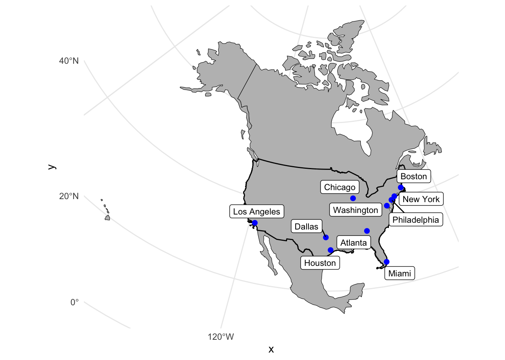
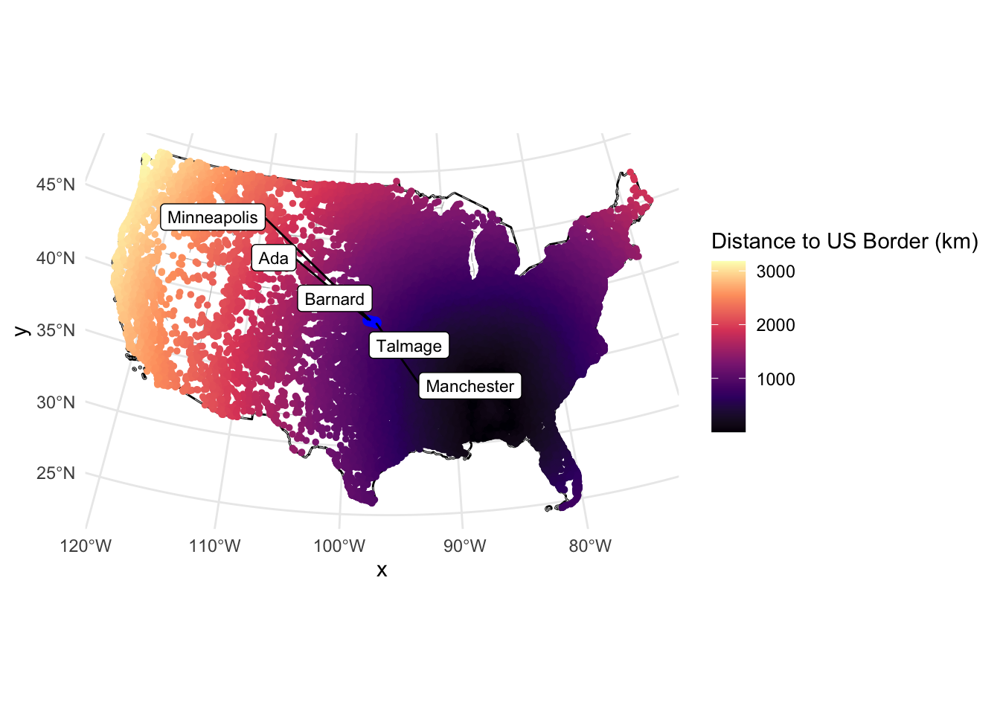
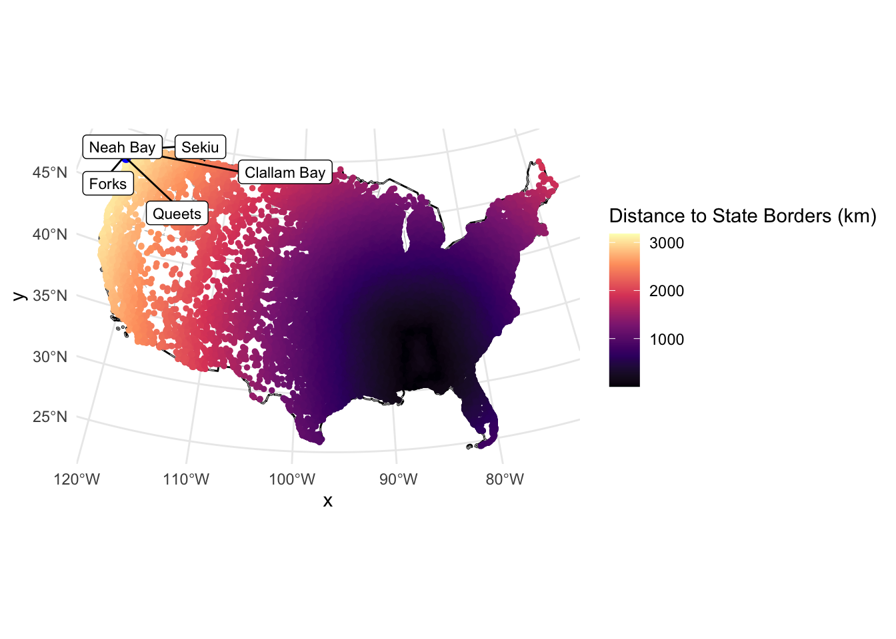
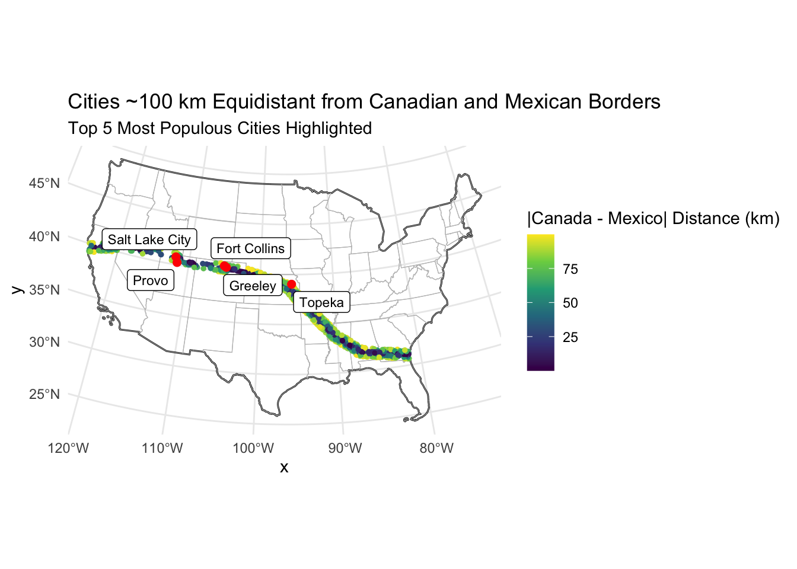
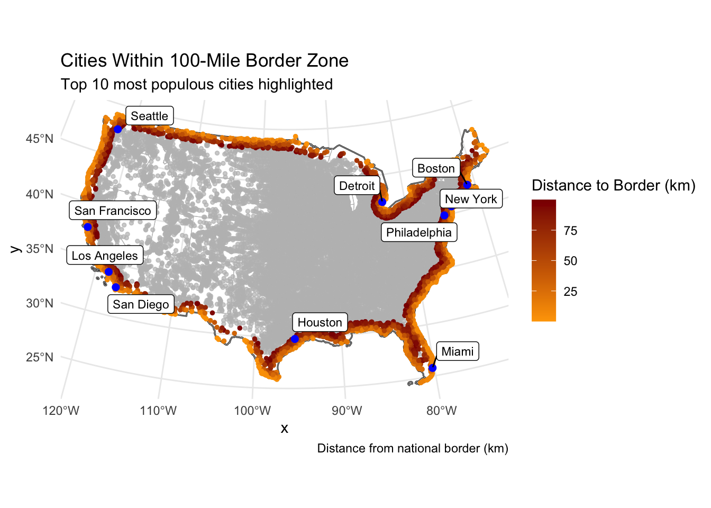

# North America Equidistant Conic:eqdc <-'+proj=eqdc +lat_0=40 +lon_0=-96 +lat_1=20 +lat_2=60 +x_0=0 +y_0=0 +datum=NAD83 +units=m +no_defs'
1.2 Get USA State Boundaries
remotes::install_github("mikejohnson51/AOI", force =TRUE)
Using GitHub PAT from the git credential store.
Downloading GitHub repo mikejohnson51/AOI@HEAD
── R CMD build ─────────────────────────────────────────────────────────────────
* checking for file ‘/private/var/folders/4v/w94pbb4j1zn3s0sk_21nhthr0000gn/T/RtmpEfGOs3/remotes6d4199bf890/mikejohnson51-AOI-f821d49/DESCRIPTION’ ... OK
* preparing ‘AOI’:
* checking DESCRIPTION meta-information ... OK
* checking for LF line-endings in source and make files and shell scripts
* checking for empty or unneeded directories
* building ‘AOI_0.3.0.tar.gz’
# getting USA state boundariesstate_bounds <-aoi_get(state ='conus')# putting data for a projected coordinate systemeqdc_state_bounds <- (eqdc_state_bounds =st_transform(state_bounds, eqdc)) %>%filter(!state_abbr %in%c("HI","AK","PR"))
1.3 Get country boundaries for Mexico, USA, and Canada
Rows: 31254 Columns: 17
── Column specification ────────────────────────────────────────────────────────
Delimiter: ","
chr (9): city, city_ascii, state_id, state_name, county_fips, county_name, s...
dbl (6): lat, lng, population, density, ranking, id
lgl (2): military, incorporated
ℹ Use `spec()` to retrieve the full column specification for this data.
ℹ Specify the column types or set `show_col_types = FALSE` to quiet this message.
# converting the data frame into a spatial objectus_cities_df <-data.frame(city = us_cities$city,state = us_cities$state_name,state_id = us_cities$state_id,population = us_cities$population,X = us_cities$lng,Y = us_cities$lat) %>%filter(!state %in%c("Hawaii","Alaska","Puerto Rico"))# using st_as_sfusc_gcs <-st_as_sf(us_cities_df, coords =c("X", "Y"), crs =4326)# remove cities in unwanted states and put the data in a pcd (st_transform)eqdc_cities <-st_transform(usc_gcs, crs = eqdc) st_transform(eqdc_cities, eqdc)
Simple feature collection with 30460 features and 4 fields
Geometry type: POINT
Dimension: XY
Bounding box: xmin: -2224960 ymin: -1601759 xmax: 2115970 ymax: 1275635
Projected CRS: +proj=eqdc +lat_0=40 +lon_0=-96 +lat_1=20 +lat_2=60 +x_0=0 +y_0=0 +datum=NAD83 +units=m +no_defs
First 10 features:
city state state_id population
1 New York New York NY 18832416
2 Los Angeles California CA 11885717
3 Chicago Illinois IL 8489066
4 Miami Florida FL 6113982
5 Houston Texas TX 6046392
6 Dallas Texas TX 5843632
7 Philadelphia Pennsylvania PA 5696588
8 Atlanta Georgia GA 5211164
9 Washington District of Columbia DC 5146120
10 Boston Massachusetts MA 4355184
geometry
1 POINT (1735953 288853.9)
2 POINT (-1939654 -413013.8)
3 POINT (647708.4 233687.9)
4 POINT (1533406 -1443153)
5 POINT (56701.32 -1132947)
6 POINT (-68280.37 -799394.5)
7 POINT (1659945 192150.8)
8 POINT (1014684 -627491.8)
9 POINT (1537869 39511.94)
10 POINT (1905157 520168.1)
Question 2
2.1 Distance to USA Border (coastline or national) (km)
top10_cities <- eqdc_cities |>arrange(desc(population)) |>slice_head(n=10)ggplot() +geom_sf(data = eqdc_country_bounds, fill ="grey", color ="black", lty =1) +geom_sf(data = eqdc_state_bounds, fill =NA, color ="grey", lty =2, size =0.5) +geom_sf(data = us_border, fill =NA, color ="black", size =0.7) +geom_sf(data = top10_cities, color ="blue", size =2) + ggrepel::geom_label_repel(data = top10_cities,aes(geometry = geometry, label = city), stat ="sf_coordinates",size =3) +theme_minimal()

3.2 City Distance from the Border
# Cities farthest from US border is: top5_farthesttop5_us_border <- eqdc_cities |>arrange(desc(distance_to_border)) |>slice_head(n=5)ggplot() +geom_sf(data = us_border, fill =NA, color ="black", lty =1) +geom_sf(data = eqdc_state_bounds, fill =NA, color ="grey", lty =2, size =0.5) +geom_sf(data = eqdc_cities, aes(color = dist_to_state_border_km), size =1) +scale_color_viridis_c(option ="magma", name ="Distance to US Border (km)") +geom_sf(data = top5_us_border, color ="blue", size =2) + ggrepel::geom_label_repel(data = top5_us_border,aes(geometry = geometry, label = city), stat ="sf_coordinates",size =3) +theme_minimal()

3.3 City Distance from Nearest State
top5_state_border <- eqdc_cities |>arrange(desc(dist_to_state_border_km)) |>slice_head(n=5)ggplot() +geom_sf(data = us_border, fill =NA, color ="black", lty =1) +geom_sf(data = eqdc_state_bounds, fill =NA, color ="grey", lty =2, size =0.5) +geom_sf(data = eqdc_cities, aes(color = dist_to_state_border_km), size =1) +scale_color_viridis_c(option ="magma", name ="Distance to State Borders (km)") +geom_sf(data = top5_state_border, color ="blue", size =2) + ggrepel::geom_label_repel(data = top5_state_border,aes(geometry = geometry, label = city), stat ="sf_coordinates",size =3) +theme_minimal()

3.4 Equidistance boundary from Mexico and Canada
# Create absolute difference column eqdc_cities <- eqdc_cities |>mutate(abs_diff_can_mex =abs(distance_to_mexico - distance_to_canada))dist_matrix_mexico <-st_distance(eqdc_cities, mx_border)eqdc_cities <- eqdc_cities |>mutate(distance_to_mexico =as.numeric(dist_matrix_mexico[,1])/1000)# Filter cities within +/- 100km of equidistanceequidistant_cities <- eqdc_cities |>filter(abs_diff_can_mex <=100)# Get 5 most populous equidistant citiestop5_eqdist <- equidistant_cities |>arrange(desc(population)) |>slice_head(n=5)# Plotggplot() +geom_sf(data = us_border, fill =NA, color ="black") +geom_sf(data = eqdc_state_bounds, fill =NA, color ="grey", size =0.5) +geom_sf(data = equidistant_cities, aes(color = abs_diff_can_mex), size =1) +scale_color_viridis_c(name ="|Canada - Mexico| Distance (km)") +geom_sf(data = top5_eqdist, color ="red", size =2) +gghighlight(abs_diff_can_mex <=100, use_direct_label =FALSE) + ggrepel::geom_label_repel(data = top5_eqdist,aes(geometry = geometry, label = city),stat ="sf_coordinates",size =3 ) +theme_minimal() +labs(title ="Cities ~100 km Equidistant from Canadian and Mexican Borders",subtitle ="Top 5 Most Populous Cities Highlighted" )
Warning: Could not calculate the predicate for layer 1, layer 2; ignored

Question 4
4.1 Quantifying Border Zone
cities_in_border_zone <- eqdc_cities |>filter(distance_to_border <=160)num_cities_in_border_zone <-nrow(cities_in_border_zone)total_population_border_zone <-sum(cities_in_border_zone$population)total_population_all_cities <-sum(eqdc_cities$population)percent_population_in_border_zone <- (total_population_border_zone / total_population_all_cities)*100# Create summary tableborder_summary_tbl <-tibble(`Number of Cities`= num_cities_in_border_zone,`Total Population in Border Zone`= total_population_border_zone,`Total Population (All Cities)`= total_population_all_cities,`Percent Population in Border Zone`=round(percent_population_in_border_zone, 1))# Convert to flextablelibrary(flextable)
Attaching package: 'flextable'
The following object is masked from 'package:purrr':
compose
flextable(border_summary_tbl) |>set_caption("Summary of Cities within 160 km of U.S. National Border") |>colformat_int(j =c("Number of Cities", "Total Population in Border Zone", "Total Population (All Cities)")) |>colformat_num(j ="Percent Population in Border Zone", suffix ="%", digits =1) |>autofit() |>theme_vanilla()
Number of Cities
Total Population in Border Zone
Total Population (All Cities)
Percent Population in Border Zone
9,813
216,043,045
396,228,558
54.5%
4.2 Mapping Border Zone
top10_borderzone <- cities_in_border_zone |>arrange(desc(population)) |>slice_head(n=10)library(gghighlight)ggplot() +geom_sf(data = eqdc_cities, aes(color = distance_to_border), size =1) +geom_sf(data = us_border, fill =NA, color ="black") +geom_sf(data = eqdc_state_bounds, fill =NA, color ="grey", size =0.5) +scale_color_gradient(low ="orange", high ="darkred", name ="Distance to Border (km)") +geom_sf(data = top10_borderzone, color ="blue", size =2) +gghighlight(distance_to_border <=100, use_direct_label =FALSE) + ggrepel::geom_label_repel(data = top10_borderzone,aes(geometry = geometry, label = city),stat ="sf_coordinates",size =3,box.padding =0.3,max.overlaps =Inf ) +labs(title ="Cities Within 100-Mile Border Zone",subtitle ="Top 10 most populous cities highlighted",caption ="Distance from national border (km)") +theme_minimal()
Warning: Could not calculate the predicate for layer 2, layer 3; ignored

4.3 Instead of labeling the 10 most populous cities, label the most populous city in each state within the Danger Zone
most_populous_per_state <- cities_in_border_zone |>group_by(state) |>slice_max(order_by = population, n=1, with_ties =FALSE)ggplot() +geom_sf(data = eqdc_cities, aes(color = distance_to_border), size =1) +geom_sf(data = us_border, fill =NA, color ="black") +geom_sf(data = eqdc_state_bounds, fill =NA, color ="grey", size =0.5) +scale_color_gradient(low ="orange", high ="darkred", name ="Distance to Border (km)") +geom_sf(data = most_populous_per_state, color ="blue", size =2) +gghighlight(distance_to_border <=100, use_direct_label =FALSE) + ggrepel::geom_label_repel(data = most_populous_per_state,aes(geometry = geometry, label = city),stat ="sf_coordinates",size =3,box.padding =0.3,max.overlaps =Inf ) +labs(title ="Most Populous Cities Within Their State in the 100-Mile Border Zone",subtitle ="Most populous cities highlighted",caption ="Distance from national border (km)") +theme_minimal()
Warning: Could not calculate the predicate for layer 2, layer 3; ignored